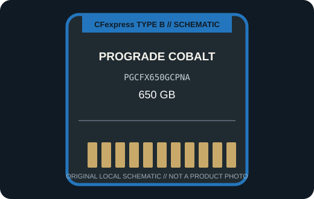

[ REMOVABLE MEDIA // PRODUCT RECORD ]
ProGrade Digital Cobalt CFexpress Type B 650 GB (PGCFX650GCPNA)
The 650 GB Cobalt model is a distinct high-sustained-write CFexpress Type B medium in ProGrade Digital’s Cobalt line. This entry describes the removable card only; the camera or reader is separate.

MEDIA ONLY: ProGrade Digital Cobalt CFexpress Type B 650 GB (PGCFX650GCPNA). Capacity, interface generation, and compatibility refer to this model and not other cards in the same family.
Capacity, interface and compatibility
| Manufacturer model | PGCFX650GCPNA; CFexpress 2.0 Type B, Cobalt |
|---|---|
| Nominal capacity | 650 GB. Usable space varies with formatting and system-reserved capacity. |
| Interface | PCIe Gen 3 x2 / NVMe Type B card. |
| Performance | ProGrade specifies up to 1,700 MB/s read, up to 1,500 MB/s burst write, and a 1,400 MB/s minimum sustained write for this 650 GB Cobalt card. |
| Host compatibility | A supported CFexpress Type B camera or reader. ProGrade recommends checking its camera-compatibility information for the exact body and firmware; other XQD slots do not gain compatibility from shape alone. |
| Write protection | No physical card-level write-protect switch is specified for this model; use host controls and verified backups. |
| Model-specific note | PGCFX650GCPNA identifies the 650 GB card; the Cobalt family also includes other capacities whose sustained-write figures must not be substituted for this model. |
Handling and preservation
No finite shelf-life or archival-life guarantee is claimed here. Keep the card clean, dry, labeled, and in its protective case; avoid touching contacts and never remove it during a write. After use, verify files and maintain multiple checksummed copies on independent media. Before a migration or recovery, record the exact card SKU, camera/reader, firmware, filesystem, and host.
Sources and standards
- ProGrade Digital — CFexpress Type B Cobalt cardsManufacturer product information for the named series or exact model; confirm SKU and host notes.
- ProGrade Digital — Cobalt performance and capacity announcementAdditional manufacturer detail for this model or product generation.
- CompactFlash Association — CFexpress card typesStandards reference for card form factors; not a substitute for device-specific compatibility.
- Library of Congress — Digital preservation formatsIndependent preservation planning reference for removable digital media.
Manufacturer data apply to the specific product generation shown. Standards define the format family; the camera and reader manuals govern host compatibility.